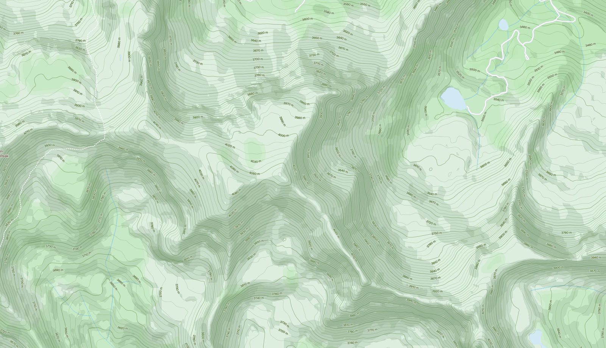
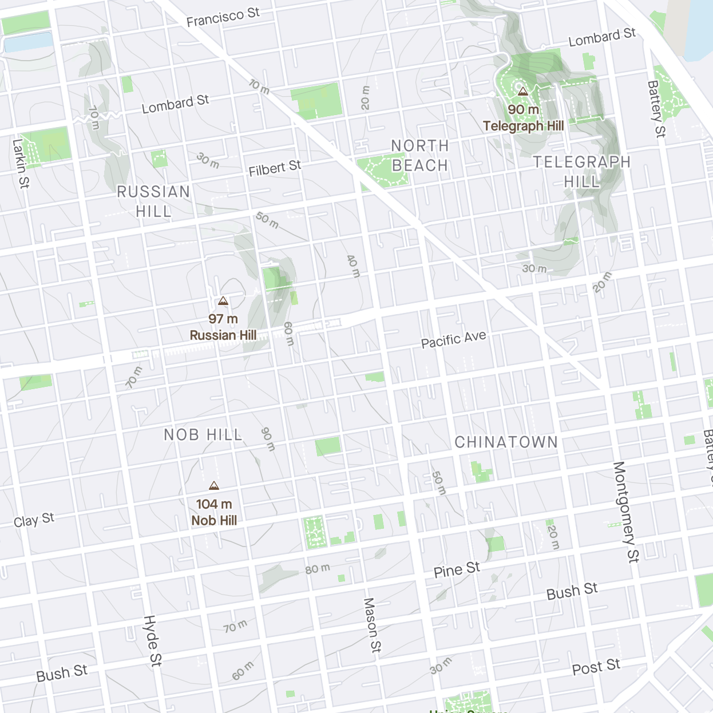

Strava is a popular fitness app that athletes can use to share their runs, hikes and bike rides. On October 30th, they're releasing a new map style and a static map feed. I designed the Helix map style to showcase the hard work Strava athletes put into their runs, hikes and rides. Named after my alma mater Helix Charter High School, this map uses a lightened version of the school’s colour palette and focuses on terrain, like the 1,370 ft Mt. Helix in San Diego, California.
I started with getting to know more about Strava stands for and how it augments the athlete. From their brand principles, I tried to really capture the following two in this map design:
Put the athlete first
Get out of the way

Put the athlete first
Contours. Not all hill grades are equal. Contour lines allow you to see the rate of change in a mountain’s slope. Based on elevation, the contour lines are a gradient of light grey for lower elevation to a rich green for higher elevation. For hilly cities like San Francisco, the grey to green transition mirrors the urban asphalted areas to more vegetation near the top. The contours are indexed so every n-th contour is thicker. This helps with legibility and mental grouping when viewing the map.
Colours. Chosen for their realistic appearance and accessibility safeness, ColorBrewer was used to generate a sequential gradient of 9 harmonious greens. ColorBrewer harnesses the algorithmic RGB and CMYK conversions used by Adobe tools. To keep the minimalist theme, lightness and saturation were adjusted in Mapbox Studio.
Peaks. Urban and rural peaks are named and marked with elevation.

Get out of the way
Navigation context. For urban athletes, highway shields are an immediate way to indicate location. By adding highway shields from across the world, this map better serves and connects athletes internationally.
Outdoor POIs. This map doesn’t advertise coffee shops or stores, but POIs that may be of athletes’ interest (or familiarity), such as parks, bays, isles and beaches, are on this map.